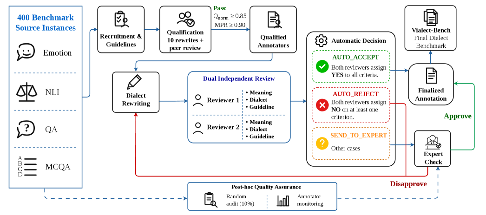
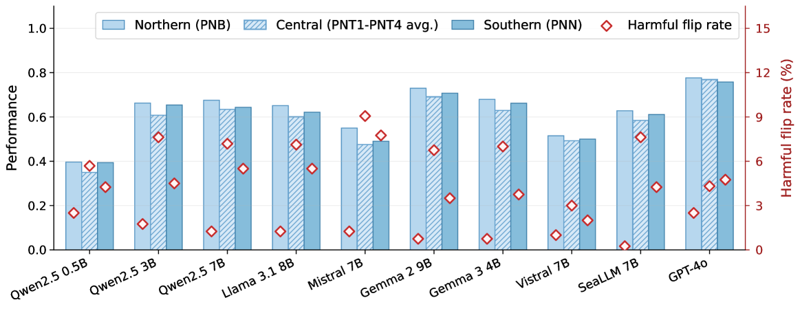
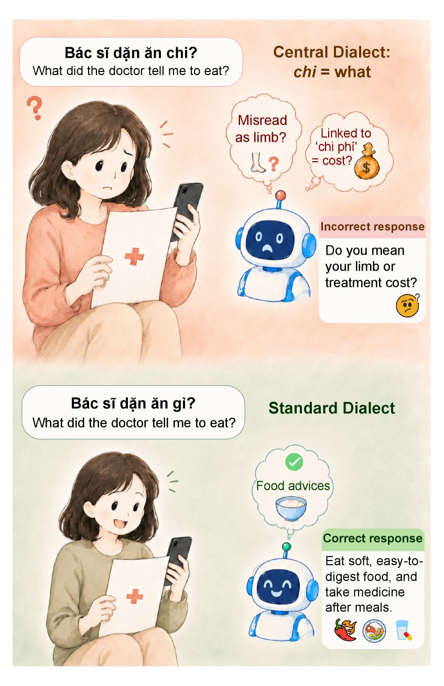

Standard Vietnamese source instances
arXiv · August 2026
VialectBench
How Robust Are LLMs to Vietnamese Dialects?
A controlled, human-annotated benchmark for measuring whether language models keep the same decisions when meaning stays fixed—but Vietnamese regional expression changes.
400Standard sources
2,400Human rewrites
6Dialect groups
4NLP tasks
10Evaluated LLMs
The question
Same meaning.
Same model decision?
Vietnamese LLMs are usually tested on standardized writing, while everyday language varies across regions. VialectBench isolates that gap: every source is paired with six human-written, meaning-preserving regional variants.
The task content, label, and defining evidence remain fixed. Only the task-bearing language changes—letting researchers measure performance drops, harmful prediction flips, and task-specific brittleness under controlled variation.
↘
Headline result Dialectal inputs reduce average performance by 2.82 points across ten instruction-tuned models. No evaluated model is fully dialect-invariant.
Dataset at a glance
A controlled, first-to-many benchmark
One Standard Vietnamese source becomes six regional test cases while the underlying task and gold answer stay constant.
Human-written dialectal rewrites
Total Standard + dialect evaluation inputs
Sources per task, evenly balanced
Fine-grained regional dialect groups
Variation families used for lexicon-guided sampling
Emotion recognition
Affective and pragmatic understanding
Source: UIT-VSMECNatural language inference
Semantic relation judgment
Source: ViANLIQuestion answering
Context-grounded evidence extraction
Source: ViQuADMultiple-choice QA
Answer selection over dialectalized options
Source: ViMMRC 2.0Regional taxonomy
Central Vietnamese is not one homogeneous group.
The benchmark separates four Central subregions because lexical, pronominal, and discourse-marker variation is especially salient there. This fine-grained view exposes robustness gaps hidden by a single “Central” label.
LexicalFunctionalPronominalDiscourse-levelIdiomatic
Northern VietnameseNorthern regional variety
North-Central IThanh Hoa
North-Central IINghe An · Ha Tinh
North-Central IIIQuang Binh · Quang Tri · Thua Thien Hue
South-CentralDa Nang · Binh Thuan
Southern VietnameseHo Chi Minh City · Southeast · Mekong Delta
Live dataset explorer
Read meaning-preserving variation side by side
Browse a balanced public preview of 32 source groups—eight per task. The Standard input stays on the left; choose any of its six regional rewrites on the right.
Control
Standard Vietnamese
Human rewrite
Dialect variant
Construction & evaluation
Human rewriting, paired evaluation
A qualification, dual-review, and expert-adjudication workflow protects meaning while preserving authentic regional form.

Select
Lexicon-guided sampling enriches dialect-sensitive cases while enforcing task-specific quality constraints.
Rewrite
Qualified speakers rewrite only task-bearing fields for their region; labels and defining evidence stay fixed.
Review
Two independent reviewers assess semantic preservation, dialect authenticity, and guideline compliance.
Evaluate
Ten models receive matched Standard and dialect inputs under deterministic direct prompting.
Quality assurance
Qualification before annotation. Two reviews after.
Annotators qualify with Qnorm ≥ 0.85 and meaning-preservation rate ≥ 0.90. Borderline review outcomes are sent to expert adjudication rather than automatically accepted.
Evaluation protocol
Controlled input change, deterministic generation
Same task instructionEvery matched Standard–dialect input receives the same task-specific prompt.
Deterministic decodingNo sampling for open models; temperature 0 for GPT-4o.
Task-aware scoringAccuracy for ER, NLI, and MCQA; token-level F1 for extractive QA.
Paired robustnessPerformance gap, harmful flip rate, and confidence erosion where comparable.
Leaderboard
Performance across regional variants
Cross-task macro-averages from direct prompting. Sort the table to compare absolute capability and dialect stability together.
↑ Higher performance is better ↓ Lower gap is better
| # | Model | Standard | PNB | PNT1 | PNT2 | PNT3 | PNT4 | PNN | Dialect mean | Gap ↓ |
|---|
Scores are percentages. Each model’s row macro-averages MCQA, NLI, QA, and ER; QA uses token-level F1 while the other tasks use accuracy, so the cross-task mean is descriptive rather than a unified metric. Gap = Standard − dialect mean. GPT-4o uses the gpt-4o-2024-08-06 snapshot.
What the benchmark reveals
Robustness failures are concentrated, not uniform
The strongest signal is regional and task-dependent: Central subgroups, particularly PNT2 and PNT3, expose the largest gaps.
Average performance change across dialect inputs
Largest dialect gap, under PNT3
QA—the most affected task on average
Central group harmful-flip rate
Task × dialect gap
QA degrades across every Central subgroup.
Average Standard-minus-dialect performance gap across ten models. Positive values indicate degradation; negative values indicate a small improvement.
ImprovementLarger drop
Gap (points)
PNBPNNPNT1PNT2PNT3PNT4
MCQA0.301.803.503.304.302.10
NLI−1.502.401.601.404.200.60
QA0.212.334.028.319.766.65
ER−0.700.70−0.205.906.400.40
Mean−0.421.812.234.736.172.44

PNT3 is the hardest group
It causes the largest degradation for nine of ten evaluated models; Qwen2.5-3B drops 10.4 points.
QA is broadly vulnerable
Its questions must align with evidence kept in Standard Vietnamese, and all four Central groups reduce mean QA performance.
Flips reveal practical harm
Central variants most often turn a correct Standard prediction into an incorrect dialect prediction.
Small gaps can mislead
A flat score can reflect stable failure rather than robust understanding; absolute capability must be considered too.
Illustrative failure
One word, two very different interpretations.
In the Central expression Bác sĩ dặn ăn chi?
, chi means “what.” The model instead associates it with a limb or the compound chi phí (“cost”), producing an unfaithful response to a meaning-equivalent question.
CentralBác sĩ dặn ăn chi?≡StandardBác sĩ dặn ăn gì?

Citation
Build more dialect-aware Vietnamese NLP.
If VialectBench supports your work, please cite the arXiv paper.
doi.org/10.48550/arXiv.2608.10414 ↗BibTeX
@misc{tran2026robust,
title = {How Robust Are LLMs to Vietnamese Dialects?},
author = {Tran, Minh and Chau, Trinh and Le, Thanh-Nhan and
Tran, Nam and Nguyen, Luan Thanh and Dang, Cuong and
Hoang, Duc},
year = {2026},
eprint = {2608.10414},
archivePrefix = {arXiv},
primaryClass = {cs.CL},
doi = {10.48550/arXiv.2608.10414}
}